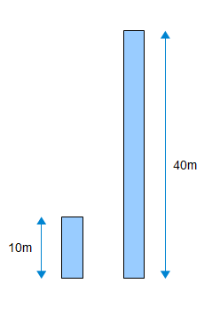

Pronounced "RAY she oh"

Consider the two bars above. One has a height of 10 meters the other 40 meters. The taller one is obviously four times taller than the other, so we say thier heights are in the ratio of four to one. What this means is that for every one unit of height on the left bar, the tall bar has four height units. Hence "four to one".
Using the bar example again, we ca also write the ratio as a fraction, where the top (numerator) is one height, and the bottom (denominator) is the other. We can pick either one to be the top, so using the smaller one, we can write: which reduces to
This fraction can then also be written as a decimal. In this case 0.25. This would be read as "the smaller bar is 0.25 times the height of the larger one"
A ratio is how many times bigger one thing is than another. It's a number you multiply by to get one thing from another. But remember, when you find the ratio of two quantities, they must be in the same units.
If you know that John and Jim have weights in the ratio 1.2 : 1, there can be confusion about whom is the heavier of the two. By convention we assume that since John is mentioned first then his weight is the 1.2 in the ratio since that is also first. But you should be as explicit as you can. It is better to say John's weight is 1.2 times Jim's.
When the ratio is expressed as a fraction, the convention is that the first mentioned item is on top (numerator).